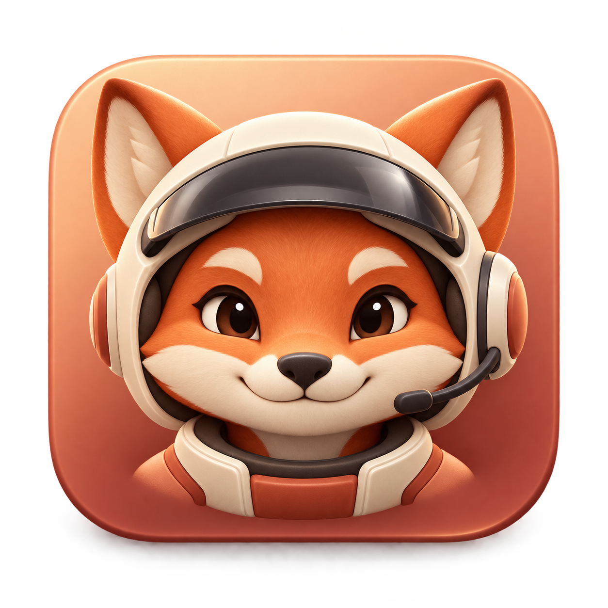
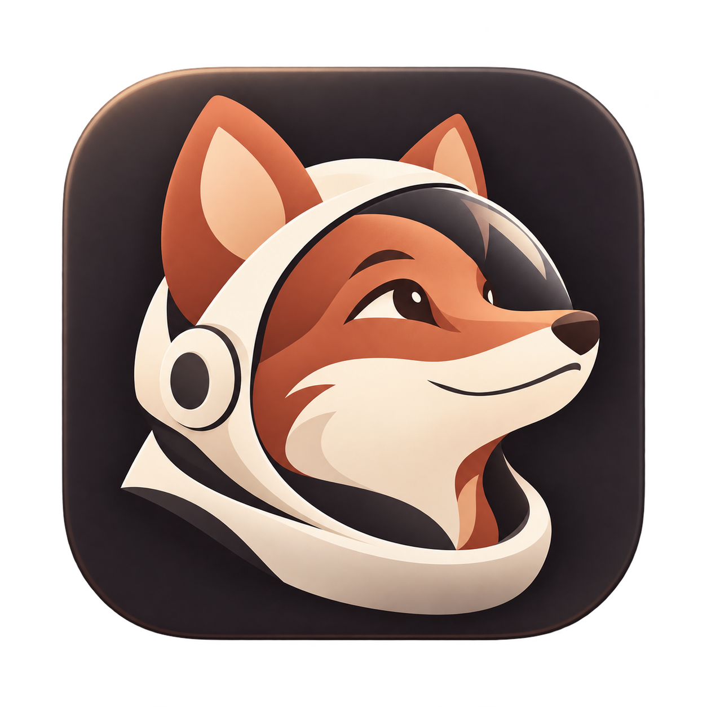
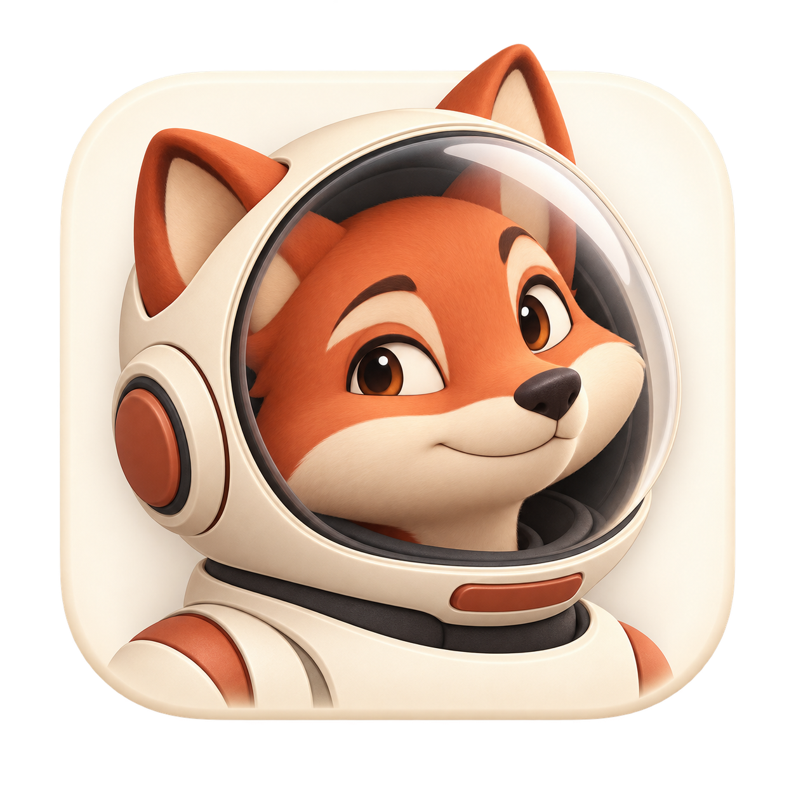

A — Co-pilot
Warm, welcoming, and closest to the current icon’s sculpted feel.
64 px
32 px
16 px
64 px
32 px
16 px
Three space-pilot directions, carrying forward the current icon’s terracotta and ivory. Review the character at large size, then its readability on light and dark backgrounds.

Warm, welcoming, and closest to the current icon’s sculpted feel.

A bold profile and clear helmet shape for a more graphic identity.

An expressive explorer with room to grow into a larger mascot.